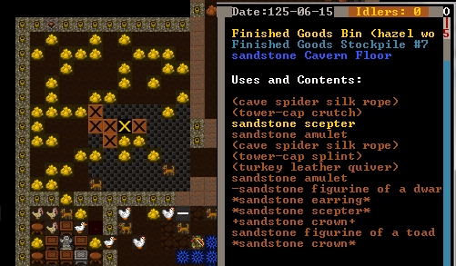
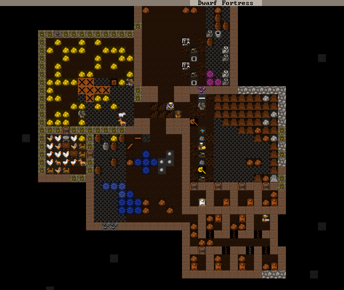
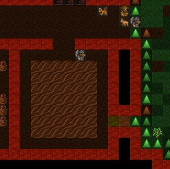
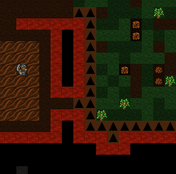
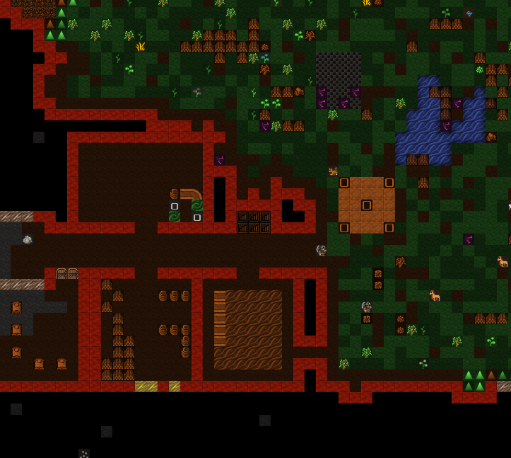
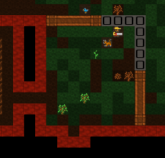
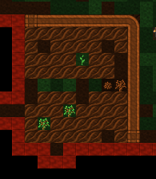

4. It almost makes sense!¶
Welcome to Part 4 of the Dwarf Fortress Walkthrough. No nancying around, lets get right back into it! I hope you’ve diligently completed your homework. If you look below, you’ll see I have…
4.1. Extreme Home Makeover: Dwarf Edition!¶
…Lots of Crafts! I’ve gone through and completed all of the tasks at the end of chapter 3, and to prove it, here is a picture of my pile of crafts. Looks like I haven’t made much in the way of bins yet, so the crafts haven’t been tidily stored in a single bin. Don’t worry, once bins are produced the dwarfs will sort all this out.
I’ve also got piles everywhere, workshops set up and food and booze production going. Things are looking good! But we have yet more useful jobs to do.
Before getting to those though, let’s set up a trade depot outside so
merchants can bring us wagons of useful goods. Place that with
b, D outside - wagons need a three tile wide pathway
without traps, so this is the easiest way to keep it accessible.
Next time traders turn up, just remember to check out the tutorial on Trading for Fun and Profit for a guide to the process.
First up, we need to move our booze production downstairs. I don’t want to dig out any more of our top-floor space just now, and rock walls can be smoothed and engraved later - which keeps dwarves happy. Of course, we have many options for how we expand the fortress, but we’ll go for simple right now, so lets get shifting stuff.
Lets get get on with some digging and our new booze space. Hell, lets move the food downstairs as well and keep it nice and close to the dining room, where dwarfs are going to want to eat it.
Here’s how I’ve plotted things out:
Once that digging is done, set up the big food storage hall as a food
stockpile. Then build a still downstairs using b, w,
l. This should be easy-peasy for you now! Your next job is go to
upstairs and remove the old food stockpile and still.
4.2. Look what the cat dragged in!¶
At some point you’re going to get immigrants. I got some right now.
Some migrants have arrived.
Soon after the message a stream of new loafers streak into the fortress. And what’s the first thing they do? Eat and drink! This has me a little concerned about our food stocks, and if this has happened to you, I suggest you do what I do and sort out some more booze and dig some more bedrooms downstairs and assign those new dwarfs to it.
4.3. Outdoor farming for fun and profit¶
You know about farming inside, now how about farming outside? As you may recall we’ve had some plant gathering going on outside. In temperate climates that means we’re generally gathering berries. And once we’ve eaten berries, what do we have? Well, if you’re a dwarf, you end up with seeds. And wouldn’t it be great to plant them? Yes it would!
We’ll cover looking at our stocks of goods later, by the way, so just trust me for now.
But berries are going to require being planted outside, as they love the sun don’t they? Of course, we don’t want to go outside where it could be nasty and dangerous, so what do we do?. We can’t really expect strawberries to grow in a dark cave, can we? So how about we compromise with these fruity demons. We’ll build an outdoor farm, but we’ll lock it off from the world with a wall and an entrance only available to us.
To achieve our goals we first need to dig some handy exit to the outdoors. Perhaps near our existing farm. This is what I did:
I’ve expanded the farm room a little and set a passage to the outside
to be dug. Once the space is dug you’ll notice that the slope icons
still exist around the exit. This could be a problem. If we built walls
around a nicely enclosed farm now enemies would still be able to get to
it from above, by walking down the slopes! So we need to remove the
slopes. To remove it, we hit d for Designations
and then z for Remove Up Stairs/Ramps.
I’ve selected almost all of the slopes across the front of my fortress. I don’t want any surprises ‘dropping’ in anywhere along our front. Here you can see my miners hard at work stripping away the outside ramps so there’s essentially a sharp drop between the level above and this level.
While you’re at it, you could tidy up the outside edge of the fortress with digging and ramp removal. Here’s my much tidier fortress entrance:
Later on we might incorporate some complex defenses into this area.
Note
Recent versions of Dwarf Fortress added the ability to climb, so to be truly secure a wall must smoothed natural stone, or built two levels high with an overhand at the top. Using stone blocks also helps.
That’s pretty tricky though, so for now we’ll just hope the goblins don’t bother.
So, lets get on with this farm! We need to surround a nice large area with walls, right? Keep our dwarfs safe from wandering critters. To build walls we need to:
- Hit
b - Hit
C, (that’sShift-c, remember the keys are case-sensitive), or scroll through the list and look for Wall/Floor/Stairs/Track and hitEnter. - Wall is selected by default, hit
Enter. - You now have a green X. Like the farm plot you can change the size
with
u,m,handk. - Hit
uuntil you’ve got a max-height wall. - Place the wall right next to the entrance, hit
Enter(below you can see how I placed mine). - Select a material using
=andEnter - Hit
Enteruntil the list goes away and you see the wall outline. You’re selecting one item for each segment of the wall. - Hit
Escuntil the game resumes.
You will now have a wall under construction! Again, hit q and move it
down your wall, you’ll see the construction status. Don’t worry, your
dwarfs will get to the wall pretty quickly.
While you’re waiting, clear all the trees and bushes from inside your
soon-to-be farm space using d, t to Chop Down
Trees and d, p to Gather Plants.
Once you’ve got this under way, build two lengths of wall across to the right go down a length and a bit, and back to the cliff face. Here’s how my outdoor farm plot looks so far:
Isn’t it coming along nicely? Soon we’ll be able to hide inside and behind our walls and ignore the nasty outside world. Yay!
Once your walls are complete you could easily build two 6×6 farm plots inside this space. One point though, make sure all those trees are cut down and plants harvested, otherwise you’re going to end up with a patchy farm plot. Also, if there are any trees in the way of a wall being built you won’t be able to place the wall. Get them cleared and the problem will go away.
Here’s my private outdoors farm yard with the farm plots built as well:
There you go! Beautiful! Now, just like farms inside, you need to
specify what the fields will build (q). On the first, I’ve set
strawberries for every season (don’t forget to cycle through the
seasons using a, b c, d).
When I tried to select strawberries
on the second field they were red, suggesting to me we won’t have
enough seeds that this isn’t the season for planting those items
So instead, I
selected some other random plant. Not sure we’ve got seeds for those,
but we’ll find out all about that later! And later on you can come back
and fix up some better planting instructions. Oh, don’t select
Seas Fert or Fertilize.
We don’t have any fertilizer yet.
While I remember things, lets take a moment to build a wall along the
top edge above our outside farm. We don’t want any goblins walking up
to the edge of the cliff, looking down, and shooting up our farmers
with their crossbows! So go up a level, using good-old < and
plan out your wall. Here I’ve built a wall,
which should once and for all block off any possible approach to my farm.
There’s one last thing we should take care of today - hungry animals! It’s pretty common for livestock to need grass (or cavern moss, or…) to graze on, so we’d better set up a pasture zone.
- Head up near the wagon, where there’s open space and plenty of grass.
- Hit
ifor a zone, select a large area, thennfor pasture. - Hit
N, then scroll with=and select grazing animals withEnter.
Done! Our livestock will now happily graze under the trees, turning grass into a foundation of dwarven industry and cuisine.
I’ll see you in chapter five to look at expanding our industries to something truly impressive!